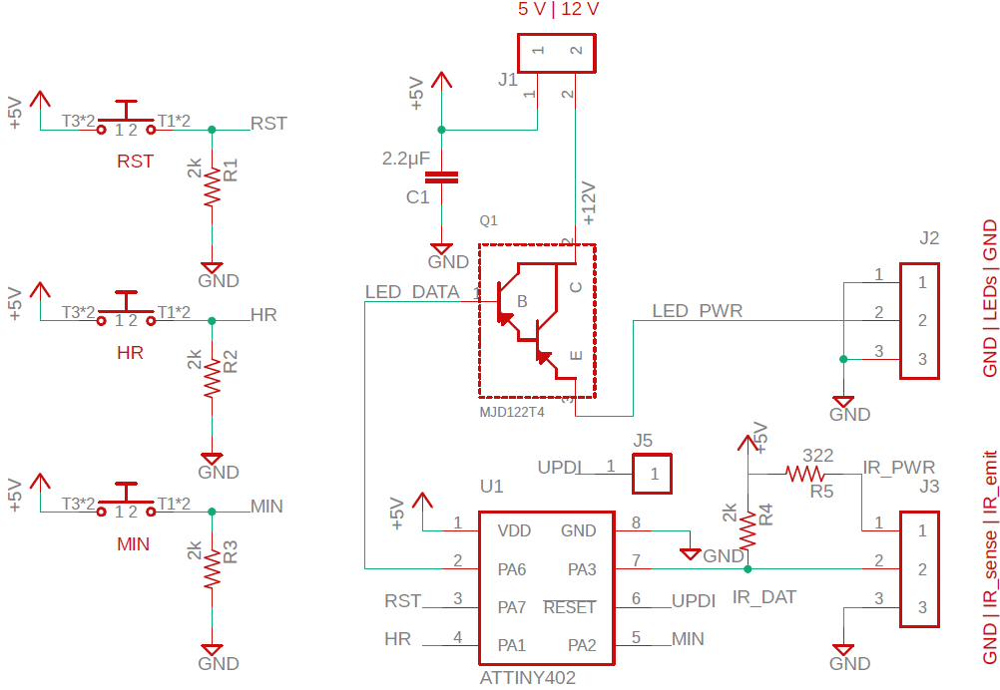

HDD Clock Controller - Solution Alpha
All off-board connections are made using eurostyle connectors. 5 V from off-board is used directly to power the microcontroller. This rail comes from a SATA-connector, so it's expected to be clean enough. However, just in case, a bypass capacitor hangs off the rail. For a time using a linear regulator to transform 12 V (needed for the LED's) into 5 V was considered. However, the infared emitter takes enough current to create thermal concerns for such a linear regulator. Morever, using 5 V directly lent itself to a smaller and cheaper solution, at the expense of an extra wire for the user to check.
As with the previous solution, 3 buttons were provided to allow adjusting the time. Surface mount buttons were selected over thru-hole ones. Though thru-hole buttons are much cheaper, they would require more board space, contrary to the goal of a smaller solution and likely making it more expensive overall.
